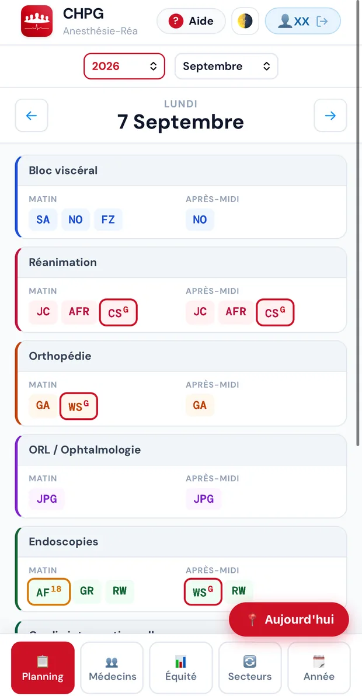

Mis à jour le 8 septembre 2026
La nouvelle adresse, la seule qui fonctionne désormais :
Cette adresse ouvre directement le portail, avec ses tuiles. Rien à taper de plus.
Trois gestes, une seule fois :
Votre code personnel n'a pas changé. Vos gardes, vos congés et vos souhaits non plus : tout a été repris à l'identique.
01Votre code d'accès›
Un code personnel, reçu par mail. Il ouvre toutes les pages du portail. Pas de mot de passe à choisir, pas de compte à créer.
Vous ouvrez une page, vous tapez votre code. C'est tout.
Combien de temps il est retenu
Vous déconnecter
Touchez votre nom, en haut de l'écran, puis confirmez. Votre code est oublié. Utile si vous prêtez ou changez de téléphone.
Ne partagez pas votre code. Il donne accès à vos informations, et ce que vous saisissez est enregistré sous votre nom. Chaque MAR a le sien.
02Installer le portail sur votre téléphone›
Une icône Planning-Med sur votre écran d'accueil, le portail en plein écran. C'est aussi la condition pour que votre code soit retenu et pour recevoir les notifications.
iPhone
- Ouvrez le portail dans Safari — uniquement Safari.
- Touchez le bouton Partager (le carré avec la flèche, en bas).
- Choisissez Sur l'écran d'accueil, puis Ajouter.
Android
- Ouvrez le portail dans Chrome.
- Touchez le menu ⋮ en haut à droite.
- Choisissez Ajouter à l'écran d'accueil (ou Installer l'application), puis Ajouter.
Activer les notifications
Vous recevrez alors :
- une garde qu'un collègue vous propose, et sa réponse à vos propres propositions ;
- la réponse du comité à une demande de jour de temps partiel ;
- l'annonce des gardes de l'année quand elles sont générées.
Quand une demande attend votre réponse, une pastille rouge apparaît sur l'icône de l'application. Elle s'efface dès que vous ouvrez le portail.
Pas de carte « Activer les notifications » ?
Deux causes. Soit elles sont déjà activées sur ce téléphone, et il n'y a rien à faire. Soit la fonction n'est pas encore ouverte pour vous : elle le sera, un mot du service l'annoncera.
Sur iPhone, les notifications demandent iOS 16.4 au minimum et l'application installée comme ci-dessus. Depuis Safari seul, elles ne fonctionnent pas.
La carte ne s'affiche pas sur ordinateur : une annonce de planning n'a d'intérêt que sur le téléphone qu'on a sur soi.
Pour les couper un jour : Réglages du téléphone → Notifications → Planning-Med. Vous continuerez de tout voir dans le portail. La notification est un raccourci, jamais le seul chemin.
03La page d'accueil›
C'est le tableau de bord. De là, vous atteignez tout le reste en un appui.
En haut : les bandeaux
Ils n'apparaissent que s'il y a quelque chose à montrer.
Ensuite : les tuiles
Tout en haut de l'écran
La cloche (section 10), le bouton de thème clair/sombre, et le bouton ? Aide qui ouvre ce guide.
La veille biblio en détail
En haut de la liste, le bouton Revues vous laisse cocher celles qui vous intéressent. Le portail s'en souvient d'une visite à l'autre.
Lu et ★ sont personnels : marquer un article lu ne le retire que de votre liste, jamais de celle des collègues. Vos marques vous suivent d'un appareil à l'autre.
04Lire le planning›

Sur téléphone, le planning s'ouvre sur une journée. En haut, l'année et le mois. Les deux flèches changent de jour. Le bouton rouge Aujourd'hui vous ramène à la date du jour.
Ce que montre la journée
Une carte par secteur — bloc viscéral, réanimation, orthopédie, ORL, endoscopies, consultations… Dans chaque carte, Matin et Après-midi, avec les initiales de chacun. Les vôtres sont mises en évidence.
Tout en bas de la journée, un bloc récapitule : Garde 24h, 8h – 18h, Sortie de garde et Absents. Et le jour même, un bandeau Cette nuit donne le binôme de garde.
Quelqu'un de garde apparaît aussi dans son secteur de journée, avec un petit G en exposant et un liseré rouge autour de ses initiales. Un 18h porte un 18 en exposant et un liseré orange.
La barre du bas
Cinq boutons, qui changent ce que vous regardez :
Les codes de la vue Année
C'est dans la vue Année que chaque jour porte un code, avec sa couleur :
Sur ordinateur
L'écran est assez large pour tout montrer d'un coup : une ligne par secteur, une colonne par demi-journée, la semaine entière. Les mêmes vues sont en haut au lieu d'être en bas.
Je ne vois pas le dernier changement
Sur ordinateur : rechargez la page.
Il existe aussi un glissement, comme sur un fil d'actualité : page tout en haut, un seul doigt, tirez franchement vers le bas. Un rond rouge apparaît en haut de l'écran pendant le rechargement. Attention, si la page a déjà défilé, même de très peu, le geste ne se déclenche pas. Il fonctionne sur la page d'accueil et sur le planning, pas sur la page des indisponibilités.
Enfin, si vous laissez le portail ouvert et que vous y revenez plus de 15 minutes plus tard, le planning se remet à jour tout seul.
Quand les changements apparaissent, et quand vous recevez un mail
Quand le comité publie, la modification apparaît sur votre écran 2 à 3 minutes plus tard.
Vous recevez ensuite un mail récapitulatif, environ 10 minutes après la fin de leurs modifications. Un seul mail, même s'ils ont changé vingt choses : le comité travaille par séances, il place, corrige, replace. Le portail attend que tout soit calme avant de vous écrire.
Si l'une de vos gardes bouge — déplacée, échangée, ajoutée, retirée — vous êtes prévenu, quelle que soit la date, même dans six mois.
Si c'est votre affectation en journée qui change (quel secteur, quelle salle), vous n'êtes prévenu que si cela tombe dans la semaine couverte par le dernier planning Excel diffusé. Au-delà, l'Excel du vendredi suivant vous le montrera avant que ce soit d'actualité.
Vous ne recevez jamais les changements des autres.
Pour un changement urgent, on vous appellera.
05Mes gardes et mes congés›
Deux vues qui ne montrent que vous. Pratiques quand vous cherchez une date sans parcourir toute l'équipe.
Dans Mes congés, un bandeau bleu vous indique votre groupe de vacances et votre rang. Appuyez dessus pour voir qui choisit avant vous, période par période, cette année et l'année suivante (section 08).
Ces vues affichent ce qui est enregistré. Si une date manque ou paraît fausse, signalez-la au comité, qui la rectifiera à la source. Une correction que vous notez de votre côté disparaîtra à la publication suivante.
06Saisir vos indisponibilités et vos souhaits›
Une fois par an, à l'automne, vous déposez vos souhaits pour l'année suivante. La tuile Mes indisponibilités n'apparaît que pendant cette campagne.
Le geste : un outil, puis des jours
- Choisissez un outil parmi les quatre boutons du bas.
- Touchez les jours concernés. Pour une période, glissez le doigt d'un jour à l'autre.
- Appuyez sur Sauvegarder mes indisponibilités, le bouton rouge tout en bas.
- Revenez quand vous voulez. Vos saisies sont conservées et modifiables jusqu'à la clôture.
Une ligne au-dessus des boutons vous rappelle en permanence l'outil actif.
Un jour ne porte qu'une seule étiquette : poser un temps partiel sur un jour déjà marqué indisponible remplace l'un par l'autre.
Les couleurs du calendrier
Quand l'outil Temps P est actif, les week-ends et les fériés s'estompent : ils ne sont pas posables, et ça se voit avant le geste plutôt qu'après.
Les compteurs du haut
Trois jauges — Congés, Formation, Temps partiel — montrent ce que vous avez posé sur votre quota. En dessous, deux nombres : combien d'indisponibilités et combien de gardes souhaitées.
Vos indisponibilités sont des souhaits, pas des congés validés. Elles sont respectées dans la mesure du possible : plus vous en demandez, moins la contrainte peut être tenue pour tout le monde. Le comité vous prévient si un souhait ne peut pas l'être.
20 par an, dont 8 au maximum sur un vendredi, un samedi ou un dimanche. L'écran s'arrête là : au-delà, le clic est refusé, il faut en retirer une pour en poser une autre.
Les chiffres ne sont pas arbitraires. Le planning a été testé jusqu'à 36 indisponibilités par personne avant que l'équité ne commence à se dégrader, et dans le pire cas de figure — toutes posées sur des week-ends. 20 laisse donc une marge large, qui absorbe ce qu'un test ne sait pas reproduire : les congés hors quota, une absence longue imprévue, et le fait que tout le monde vise les mêmes ponts.
Le vendredi compte dans les 8 : la garde de week-end est assurée d'un bloc, du vendredi au dimanche, par le même binôme. Bloquer le vendredi, c'est se retirer du week-end entier.
Une chose à savoir, qui rassure souvent : bloquer des week-ends ne réduit pas votre part. Vous devez le même nombre de samedis et de week-ends que vos collègues — vous déplacez seulement les dates. Personne ne s'allège en posant des indisponibilités.
Un point compte plus que le nombre : le week-end coûte cher. Un samedi ou un dimanche n'a que deux places, et la moitié de l'équipe y est déjà en récupération ou en repos de garde. Une indisponibilité de week-end pèse cinq à dix fois plus lourd qu'une indisponibilité de mardi.
Donc : posez librement en semaine, et réservez vos indisponibilités de week-end aux dates qui comptent vraiment.
Demander à être de garde un jour précis
C'est l'outil Souhait. Quatre choses à savoir :
- Un souhait ne vous donne pas une garde en plus. Il déplace une garde que vous auriez faite de toute façon, à la date que vous préférez. Votre nombre de gardes dans l'année ne change pas.
- Un souhait refusé ne vous fait rien perdre. La garde vous revient à une autre date.
- Un lundi, un mardi, un mercredi : presque toujours accordé. Ces jours sont nombreux.
- Un samedi, un vendredi, un dimanche, un jour férié ou une veille de férié : une seule demande par an. Ces jours sont rares. Au-delà d'une demande, les suivantes sont ignorées.
Vous demandez le mercredi 5 mai 2027. C'est la veille de l'Ascension : cette demande consomme votre unique demande « jour rare » de l'année. Si vous demandez ensuite un samedi, il ne sera pas retenu.
Si vous touchez un vendredi, le dimanche se sélectionne aussi : c'est le même week-end de garde, assuré par le même binôme. Le samedi du milieu revient à d'autres. Même chose pour un lundi férié (le samedi d'avant vient avec) et un jeudi férié (le samedi d'après). Un message vous le confirme au moment du clic. Comptez un week-end comme une seule demande, même si deux jours s'allument.
Vérifier que c'est enregistré
Quittez la page, rouvrez-la. Ce que vous voyez alors est ce qui est enregistré. Si vos jours sont là, c'est bon. Inutile de ressaisir.
Dès que les gardes de l'année sont réparties, vos indisponibilités passent en lecture seule. Vous les voyez toujours, mais vous ne pouvez plus les modifier : elles n'auraient plus d'effet, les gardes sont attribuées. Un bandeau vous le signale. Pour changer une garde après coup, c'est Mes échanges (section 09).
Le mail « Vos gardes »
Quand le planning est généré, vous recevez la liste de vos gardes de l'année, mois par mois, à reporter dans votre agenda. Les week-ends et les fériés y sont signalés, et le mail vous dit combien de vos demandes ont été retenues.
Il peut mettre un peu de temps à arriver. S'il ne vous parvient pas, regardez vos courriers indésirables, puis signalez-le au comité, qui peut le renvoyer.
07Vos jours de temps partiel›
Cette section concerne les MARs dont la quotité est inférieure à 100 %, hors jours fixes convenus.
Deux moments, pas un
Pendant la campagne d'automne, vous posez vos jours sur le même écran que vos indisponibilités (section 06). C'est le moment le plus utile : vos jours sont connus avant que les gardes soient réparties, donc le planning se construit autour d'eux.
Le reste de l'année, ce que vous n'avez pas posé reste disponible sur la tuile Mes jours de temps partiel, qui apparaît une fois le planning publié. Vous choisissez dans ce qui reste libre, sans date limite, et vous pouvez retirer un jour tant qu'il n'est pas passé.
Quel que soit le moment où vous l'avez posé, un jour de temps partiel ne vous est jamais repris. Aucune garde ne sera placée la veille : le repos du lendemain ne peut pas venir s'écrire sur un jour où vous ne travaillez pas.
Un jour de temps partiel se pose sur un jour ouvré : ni week-end, ni férié. Ces jours-là ne vous feraient rien gagner.
Lire le calendrier
Le petit chiffre en bas de chaque case est le nombre de personnes présentes ce jour-là.
Le compteur en haut
Trois nombres, trois choses différentes :
Vos demandes en attente occupent une place : vous ne pouvez pas demander plus que votre quota total, accordés et attente confondus.
La réponse du comité arrive en notification — « Temps partiel validé » ou « Temps partiel refusé », avec la date. En la touchant, vous revenez sur le calendrier : le jour est devenu violet s'il est accordé, noir s'il est fermé.
Pourquoi certains jours sont jaunes ou noirs
Chaque jour, il faut assez de MARs présents pour tenir les blocs, les salles et la garde. L'écran calcule ce qu'il resterait de présents si vous posiez votre jour : 15 ou plus, le jour est vert ; 13 ou 14, il est jaune et le comité décide ; 12 ou moins, il est noir et personne ne peut le demander.
Si deux collègues visent le même jour, le premier validé peut faire passer le jour de l'autre en dessous du seuil. C'est pour cela que la réponse appartient au comité, qui voit les chiffres du moment.
08Comment vos vacances sont réparties›
Les grandes périodes — hiver, printemps, été, Toussaint, Noël — sont réparties de façon à ce qu'il reste toujours assez de monde dans le service. Pour que le choix soit équitable, l'équipe est séparée en trois groupes : A B C
- Une rotation annuelle détermine quel groupe choisit en premier, période par période.
- À l'intérieur de chaque groupe, une rotation détermine l'ordre de passage des personnes.
- Le placement se fait en présentiel, lors d'un staff dédié : chacun choisit à son tour, à l'écran, devant tout le monde.
- Le résultat est publié dans le planning.
Quel groupe choisit en premier
Le groupe placé à gauche choisit en premier. Chaque année, tout recule d'un cran — votre groupe comme votre place à l'intérieur du groupe — et celui qui était dernier repasse premier.
09Donner ou échanger une garde›
Une garde tombe mal ? Vous pouvez la donner à un collègue, ou l'échanger contre l'une des siennes, directement entre vous. Le comité n'intervient pas : si votre collègue accepte, le planning se met à jour tout seul.
Proposer
Page d'accueil → Mes échanges → Proposer. Choisissez votre garde, ce que vous voulez (la donner, ou l'échanger contre une garde précise), et le collègue.
Les vérifications se font au moment de l'envoi. Si votre collègue est en congé ce jour-là, vous le saurez tout de suite, pas 48 heures plus tard.
Répondre
Le collègue reçoit une notification. Il ouvre la demande, voit les dates et ce qui changera dans son planning, puis choisit Accepter ou Refuser. S'il accepte, tout s'écrit en quelques secondes — sa garde, son repos du lendemain — et vous êtes prévenu.
Sans réponse
Un rappel unique part au bout de 24 heures. À 48 heures, la demande expire d'elle-même : vous êtes prévenu, et rien n'a bougé. Votre garde est toujours à vous.
Un samedi donné transfère automatiquement sa récupération au collègue qui prend la garde, et la notification indique la nouvelle date aux deux. Si le transfert est impossible (récupération déjà prise, jour occupé chez le receveur), l'échange se fait quand même et le comité replace la récupération à la main. Vous n'avez rien à faire.
Jamais deux gardes d'affilée. Jamais une garde donnée à quelqu'un d'absent, ou dont le repos tomberait sur une absence. Jamais rien d'écrasé dans le planning. Si une proposition est refusée, le motif s'affiche : ce n'est pas une panne, c'est une règle du service, la même pour tous.
10La cloche›
En haut de votre page d'accueil, la cloche rassemble tout ce que le planning vous a annoncé ces 30 derniers jours : échanges de gardes, réponses à vos demandes de temps partiel, publication des gardes de l'année.
Touchez la cloche, la liste s'ouvre, classée par jour. Touchez une ligne : elle vous amène à la bonne page.
Vous avez raté une notification — téléphone éteint, notifications coupées, ou pas eu le temps de la lire ? Aucune importance. La liste est la même sur tous vos appareils et rien ne s'y perd. La notification est une sonnette ; la cloche est le registre.
Si l'application est installée, un petit chiffre apparaît sur son icône quand quelque chose de nouveau vous attend. Il s'efface dès que vous ouvrez votre page d'accueil.
11Vos données›
Aucune donnée n'est vendue, partagée ni exploitée à d'autres fins. Le portail n'est relié à aucun outil de l'hôpital : c'est un outil du service, pour le service.
12Un problème ?›
13Le principe›
Chaque année en novembre, un calcul construit le planning de gardes de l'année suivante, en une quinzaine de secondes. Il ne tire pas au sort.
Il donne à chacun un nombre de gardes à faire, proportionnel à son temps de travail. Puis il remplit les jours un par un. À chaque jour, il prend les deux MARs les plus en retard sur leur compte, parmi ceux qui sont disponibles.
L'année de planning ne commence pas le 1er janvier : elle commence le premier lundi. 2027 va du lundi 4 janvier 2027 au dimanche 2 janvier 2028, soit 364 jours. Deux gardes par jour, une en réanimation et une en maternité–bloc : 728 gardes à répartir.
Trois idées suffisent à tout comprendre
Le calcul produit une proposition, que le comité vérifie avant publication. Ensuite, les échanges entre collègues restent libres et sont enregistrés au réel.
Comment deux MARs à égalité sont départagés
Quand deux MARs sont exactement à égalité pour une garde, un numéro de tirage tranche. Il ne dépend ni de votre nom ni de votre place dans la liste.
Le calcul s'arrête dès qu'un tirage met tout le monde à une garde d'écart au plus — ce qui arrive dès le premier essai plus d'une fois sur deux. Sinon il recommence avec un autre numéro, huit fois au maximum, et conserve le meilleur résultat.
Rejouer le même numéro redonne exactement le même planning.
14Combien de gardes vous devez›
Avant de placer la moindre garde, le calcul détermine votre cible : le nombre de gardes que vous devez faire dans l'année. Pas une cible unique, mais une par type de jour : week-ends, samedis, jeudis, veilles de férié, fériés, et le total.
Votre cible est un nombre entier
Votre part se calcule d'abord avec une virgule — « 5,4 samedis » — puis elle est arrondie en nombre entier, parce que personne ne peut faire 5,4 samedis. Faire pile sa cible est donc possible, et c'est le cas le plus fréquent.
L'écart affiché dans la vue Équité mesure alors une seule chose : la différence entre ce que vous avez fait et ce que vous deviez.
Trois MARs, 10 samedis à répartir. Leurs parts exactes sont 3,4 · 3,3 · 3,3.
On donne d'abord à chacun sa part entière : 3 · 3 · 3. Neuf samedis sont placés, il en reste un.
Ce dernier samedi va à celui dont la virgule était la plus grande, le 3,4. Cibles finales : 4 · 3 · 3. La somme fait exactement 10 : aucun samedi ne se perd, aucun ne se dédouble.
Ce qui fait varier votre cible
Seules les absences structurelles — arrivée, départ, congé long — réduisent la part due. Vos indisponibilités, vacances et formations ne la réduisent pas : elles concentrent simplement vos gardes sur vos périodes de présence.
Sinon, il suffirait de poser beaucoup d'indisponibilités pour faire moins de gardes que les autres.
15L'ordre : les week-ends d'abord›
Tous les jours de garde ne se valent pas. Le calcul équilibre les écarts dans cet ordre strict :
- Le week-end vendredi + dimanche. La charge la plus lourde. Le même binôme assure le vendredi et le dimanche, avec les mêmes rôles. Un week-end compte pour une unité qui ne se coupe pas.
- Les samedis. Chaque samedi de garde ouvre droit à une récupération (section 20).
- Les jeudis et les veilles de férié, à égalité, puis les fériés.
- Le total de gardes. Équilibré en dernier : les lundis, mardis et mercredis servent de variable d'ajustement.
Le vendredi 12 mars 2027 et le dimanche 14 mars 2027 sont assurés par le même binôme, chacun dans le même rôle les deux jours. Le samedi 13 mars, au milieu, revient à d'autres.
Concrètement, à chaque jour à pourvoir, le calcul classe les MARs disponibles selon quatre critères, dans cet ordre :
- L'espacement depuis leur dernière garde.
- Le retard sur le type de jour concerné — pour un samedi, qui est le plus loin de sa cible de samedis.
- Le lissage sur l'année, pour ne pas entasser les gardes de quelqu'un sur un trimestre.
- Le retard sur le total.
Les deux premiers prennent la garde.
C'est le point qui surprend le plus. Vous pouvez être le plus en retard sur les samedis et ne pas prendre celui qui se présente, simplement parce que votre dernière garde est trop proche.
Ce n'est pas un oubli. Une garde rapprochée se paie tout de suite ; un samedi de retard se rattrape sur l'année. Le retard finit par l'emporter, mais plus tard.
Pourquoi les week-ends sont les plus durs à équilibrer
Un week-end ne se divise pas : c'est vendredi et dimanche, ou rien. Et il n'y en a qu'une cinquantaine dans l'année pour toute l'équipe, soit environ quatre par personne.
Avec des unités aussi grosses et aussi peu nombreuses, une seule d'écart pèse lourd. C'est pour cela qu'ils passent en premier : ce qui se rattrape difficilement se traite d'abord.
16Ce qui ne vous arrivera jamais›
Certaines situations sont interdites. Le calcul ne les propose jamais, même si cela arrangeait les compteurs.
- Jamais deux gardes deux jours de suite. Le lendemain d'une garde est un repos de garde, intouchable.
- Jamais de garde sur un repos de garde, ni la veille d'un jour où vous avez posé un temps partiel : le repos du lendemain ne pourrait s'écrire nulle part.
- Jamais de garde sur une indisponibilité, des vacances, une formation, un jour de temps partiel ou un congé.
- Jamais de garde une semaine « off » pour les MARs en rythme deux semaines sur deux.
Au-delà des interdits
Le calcul espace aussi vos gardes. Une garde à deux jours d'une autre est fortement pénalisée, à trois ou quatre jours légèrement. Une troisième garde dans la même semaine est très lourdement pénalisée : en pratique elle n'arrive que si la journée resterait sans personne. Et il lisse sur l'année : vos gardes sont réparties au fil des mois en proportion de votre présence, plutôt qu'entassées sur une période.
Jeudi et samedi la même semaine, ou deux week-ends d'affilée, sont évités — mais autorisés en dernier recours quand une journée resterait sans personne (voir ci-dessous).
Quand une journée resterait sinon sans personne, le calcul s'autorise le rythme garde – repos – garde sur trois jours : jeudi puis samedi la même semaine, ou un second week-end d'affilée. C'est légal — ce ne sont pas deux gardes consécutives — et une garde rapprochée reste préférable à un service découvert.
Les deux gardes d'affilée, elles, ne sont jamais tolérées : c'est illégal.
17Comment vos souhaits sont traités›
Vos indisponibilités sont respectées. Vos souhaits de garde le sont aussi, avec une nuance importante.
Il oriente le placement de gardes que vous auriez faites de toute façon. Un souhait non retenu ne vous fait rien perdre : la garde vous revient à une autre date.
Les jours ordinaires et les jours rares
Lundi, mardi, mercredi : accordés presque toujours. Ils sont nombreux, l'équité se rattrape ailleurs sans peine.
Samedi, week-end, jour férié, veille de férié : ce sont les jours rares. Il n'y en a qu'une cinquantaine par an, parfois une douzaine. Chacun n'y a droit qu'à quelques-uns. Vous disposez donc d'une seule demande par an sur ces jours-là, honorée si elle ne vous met pas au-dessus de votre part.
Vous demandez tous les samedis de l'année. Vous n'en obtiendrez pas plus que votre part : le reste est réparti par l'équité, exactement comme si vous n'aviez rien demandé.
Ce que vous obtenez en pratique : environ deux souhaits sur trois. Posez une dizaine de dates au plus, celles qui comptent vraiment pour vous.
Si plusieurs MARs veulent la même date
Le moins servi jusque-là passe en premier. Le calcul essaie aussi de mettre deux demandeurs ensemble sur le même binôme, ce qui satisfait les deux d'un coup.
Vos souhaits ne peuvent pas remplir votre cible au point d'évincer la part de samedis, de jeudis et de week-ends que vous devez à l'équipe.
Votre part est calculée au prorata, et elle peut être très petite. Quelqu'un qui arrive pour cinq semaines a droit à trois gardes, dont un jeudi : il ne lui reste qu'une seule garde libre pour ses souhaits. Il peut en poser trois et n'en obtenir aucun, sans que rien ne soit cassé.
Dans ce cas, posez une seule date, tôt dans votre période, et un lundi, mardi ou mercredi.
Enfin : pour éviter une date plutôt que la demander, ce n'est pas un souhait, c'est une indisponibilité.
18Noël, Jour de l'an, fériés et ponts›
Les quatre dates sensibles
Le 24 et le 25 décembre, le 31 décembre et le 1er janvier sont placés avant tout le reste, selon une rotation qui court sur plusieurs années.
- Priorité à qui ne les a jamais faites, puis à celui qui les a faites il y a le plus longtemps.
- Au plus une de ces quatre dates par personne et par an. Personne n'enchaîne Noël et le Nouvel An la même année.
- La mémoire est tenue au réel : si vous avez échangé votre 25 décembre, c'est votre collègue qui est enregistré comme l'ayant fait.
Une réserve, et une seule
L'année suivante est générée en novembre, alors que les gardes de Noël et du Nouvel An n'ont pas encore été faites. Si un échange est conclu après cette génération, c'est l'affectation d'origine qui a servi à calculer la rotation : la priorité peut être faussée pour cette année-là.
Elle est rétablie dès l'année d'après, puisque la mémoire, elle, enregistre bien l'échange.
Les fériés en semaine
Un férié isolé un mardi ou un mercredi est compté à part, avec sa propre cible d'équité.
Les ponts
Un férié qui touche un week-end forme un bloc, assuré par un seul binôme :
Le jeudi 6 mai 2027 est l'Ascension. Le même binôme assure ce jeudi et le samedi 8 mai.
Le lundi 1er novembre 2027 est la Toussaint. Le même binôme assure le samedi 30 octobre qui précède et ce lundi.
Cela évite qu'un MAR se retrouve coincé sur un jour isolé au milieu d'un pont où tout le monde est parti. Le bloc est rattaché aux samedis — avec sa récupération — et le jour férié compte aussi dans le compteur des fériés.
19Qui prend la réa, qui prend la maternité›
Chaque jour de garde mobilise un binôme : une garde réanimation (G) et une garde maternité–bloc (G2).
Le calcul choisit d'abord les deux personnes par équité, puis répartit les rôles : celui des deux qui a le plus fait de réanimation par rapport à la maternité prend la maternité, et inversement.
Sur un week-end vendredi + dimanche, chacun garde le même rôle les deux jours.
Résultat : au fil de l'année, chacun fait à peu près autant de gardes de réanimation que de gardes maternité–bloc.
20Les récupérations de samedi›
Chaque samedi de garde, y compris les samedis pris dans un pont, ouvre droit à une récupération (R), posée automatiquement. Les samedis sont traités dans l'ordre du calendrier, et pour chacun le calcul cherche le premier jour qui convient après la garde.
Un jour utile d'abord
De préférence un vendredi ou un lundi — le week-end s'allonge — ou un jour qui borde une absence déjà posée — les vacances s'allongent. À défaut, n'importe quel jour de semaine non férié.
Sans dégarnir le service
La récupération n'est posée que s'il reste au moins quinze MARs présents ce jour-là. Cette règle ne cède jamais. Au plus deux récupérations le même jour, et au moins trois jours entre deux de vos propres récupérations.
Un jour où vous êtes présent
Jamais sur une garde, un repos de garde ou une absence. En revanche, un jour où vous avez seulement demandé à ne pas être de garde reste un jour travaillé : une récupération peut s'y poser.
Le calcul relâche d'abord le confort — jamais le plancher de quinze présents. Et si vraiment rien n'est possible après le samedi, il pose la récupération avant, au plus près de la date, et le signale au comité. Une récupération n'est jamais abandonnée en silence.
21Le 18h›
Le 18h de chaque jour de semaine est réparti sur l'ensemble des MARs, avec la même logique de proportionnalité.
- Cible proportionnelle à votre quotité et à votre présence dans l'année, comme pour les gardes. Les MARs qui ne font que le 18h, sans garde, en portent une part majorée.
- Au plus un 18h par semaine, et jamais deux jours de suite.
- Le vendredi, le 18h revient en priorité au MAR de garde réanimation du samedi : il enchaîne naturellement sur son week-end.
- Jamais de 18h un jour de garde, de repos de garde, de récupération, d'absence, ni une semaine « off » — ni avant votre arrivée ou après votre départ du service.
Ces règles ne sont relâchées qu'en tout dernier recours, si personne d'autre n'est disponible.
22D'une année à l'autre : la dette›
Que devient le petit écart de fin d'année ? Il est reporté sur l'année suivante. Qui a fait un peu plus que sa part une année en fera un peu moins la suivante, et inversement — type de jour par type de jour : celui qui a fait trop de samedis en fera moins, celui qui a fait trop de week-ends aussi.
- Le report est plafonné à 2 gardes par type de jour, et amorti : seuls 60 % de l'écart sont reportés. La dette corrige en douceur, elle ne bouleverse jamais une année.
- L'écart mesuré est celui du planning généré, figé au moment de la génération — pas l'état au 31 décembre. Vos échanges de gré à gré en cours d'année ne créent ni ne remboursent de dette.
- Un MAR absent l'année précédente démarre à zéro.
2027 est la première année entièrement calculée. C'est donc la première dont les compteurs servent de référence. Pour 2027, tout le monde part de zéro.
23Vérifier par vous-même›
Six compteurs y sont suivis : le total, les samedis, les jeudis, les week-ends, les veilles de férié et les fériés. Chacun est comparé à votre cible.
Deux lectures possibles : Initiale, le planning tel qu'il a été calculé, et Instantané, l'état actuel, échanges compris.
Ouvrez votre ligne : le type de jour en cause y apparaît. Un chiffre qui surprend s'explique presque toujours par un souhait que vous avez posé, par un report de l'année précédente, ou par un échange de garde. Le comité peut vous montrer le détail.
Le planning 2026 a été construit à la main, et une partie des gardes a été assurée par un médecin extérieur au service. Les écarts qu'on y lit ne se comparent pas à ceux des années suivantes.
Le planning généré est verrouillé : une fois publié, il ne peut pas être regénéré discrètement. Les imprévus — départ d'un collègue, absence longue — sont gérés par une redistribution assistée qui préserve l'équité.
24Ce qui a été vérifié avant de s'en servir›
Avant de répartir une seule vraie garde, le calcul a été éprouvé sur 400 années de planning simulées : vingt scénarios d'absences différents, de vingt années consécutives chacun, enchaînées comme en vrai, chaque année héritant de la précédente.
Chaque scénario reprend la réalité du service : notre équipe et sa pyramide des âges, l'arrêt des gardes à 60 ans, les départs en retraite et l'arrivée des remplaçants, environ 80 jours d'absence par personne et par an, des congés longs et des jours fixes.
Si le placement habituel échoue, il reprend la journée et retente en acceptant la tolérance décrite en section 16 — exactement le raisonnement du comité, qui cassait la contrainte la moins gênante plutôt que de laisser un jour découvert.
Et si vraiment personne n'est disponible, il le signale nommément, avec la date, avant publication. Le comité n'est jamais mis devant le fait accompli.
Pourquoi 400 années et pas quatre
Un planning équitable une année, c'est facile à promettre. Une année qui tombe bien ne prouve rien.
Vingt trajectoires de vingt ans, avec des départs, des arrivées, des congés longs et des souhaits tirés différemment à chaque fois : c'est ce qui permet de dire que le résultat ne tient pas à la chance.
Document équipe — docs/guide-mar.html